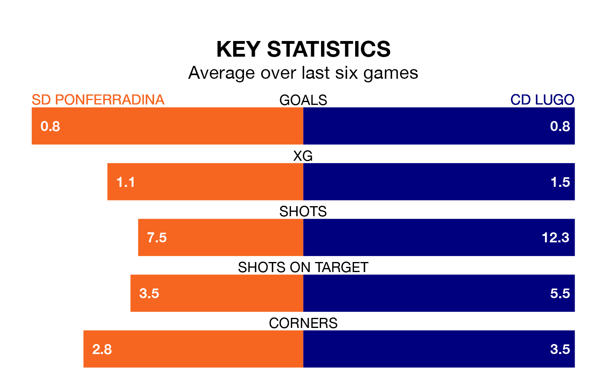

SD Ponferradina host CD Lugo on Sunday at the Estadio El Toralín in Primera Division RFEF Group 1.
In their last league match, on March 9, Ponferradina drew with Celta de Vigo B 0-0 away.
Lugo also drew, 1-1 at home against Unionistas de Salamanca CF on March 10, with Nacho Quintana scoring their goals.
In Andrés Tomás Prieto Albert, Ponferradina can rely on one of the league's safest pair of hands. He has kept 12 clean sheets in his 25 appearances this season, and only one other 'keeper – Cultural y Deportiva Leonesa's Miguel Bañuz Antón – has been able to prevent the opposition scoring on more occasions in Primera Division RFEF Group 1.
In Lugo's net, Jose Goncalo Macedo Tabuaco has four clean sheets in 12 games. He has conceded a goal every 98 minutes, 50% more often than the 150 minutes between goals for Prieto Albert.
The hosts are third in the table after 27 games, of which they have won 13 and drawn 10, earning 49 points.
The away team are seven places behind Ponferradina in 10th, with nine wins and nine draws putting them on 36 points.
In the last 10 years, Ponferradina and Lugo have played each other on 16 occasions. Ponferradina won eight of them, Lugo four, and they drew four times.
On average, Ponferradina scored 1.1 goals and Lugo 0.8 in those matches.
Their last meeting was on September 17, when they played out a 0-0 draw.
With 21 goals in 27 games so far this season, Lugo are scoring at below the league average rate with 0.8 goals per game. And they are conceding at an average rate, letting in 27 goals at a rate of 1.0 per game.
Ponferradina, meanwhile, are above average scorers, with 1.1 goals per game, compared to a league average of 1.0. They have conceded 0.6 goals per game.
The home side are in mixed form in Primera Division RFEF Group 1, with two wins and three draws from their last six games.
With a win and four draws over that period, Lugo's form is slightly worse – they have taken seven points from 18, compared to Ponferradina's nine.
Updated: 15:10 (UTC), 15/03/24